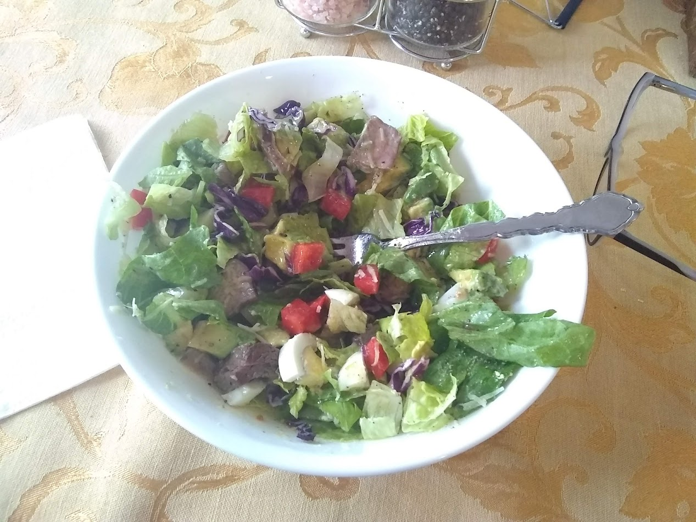

Salad

I eat this frequently for lunch or dinner. It's tasty and very healthy.
Ingredients
- Romaine lettuce
- One large carrot
- One side of red bell pepper
- Black olives
- Baby corn
- Cheese
- Homemade salad dressing
Steps
- Clean and slice vegetables and add to a large bowl
- Sprinkel grated cheese over the top
- Add homemade salad dressing and mix
Other resources
- History of Salads and Salad Dressings